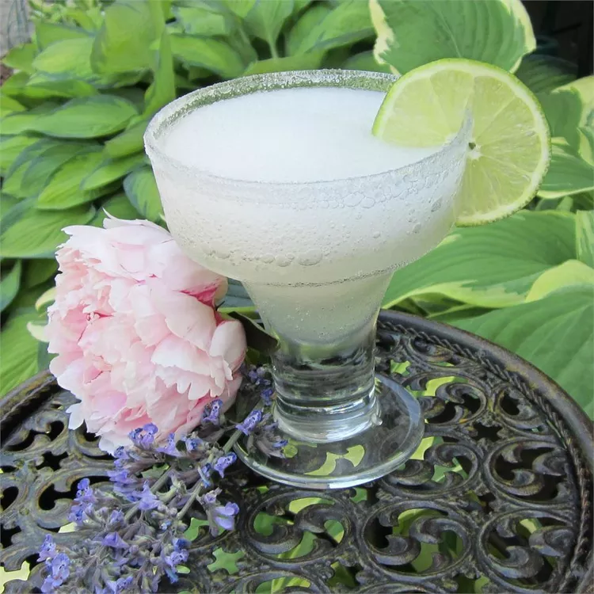

Classic Daiquiri

Description:
Daiquiris can get a bad rep for being fruity slushies that you only drink on the beach. But this Cuban rum cocktail was a favorite of some of America's biggest names — including President John F. Kennedy and Ernest Hemingway. Let the tasty simplicity of the Daiquiri change your mind with the sweet, fresh flavors of light rum, sugar, and lime.
Ingredients:
- 1 cup ice cubes
- 1 ½ fluid ounces light rum
- 1 fluid ounce lime juice
- 1 fluid ounce triple sec
- 1 teaspoon white sugar
- 1 lime wedge
- 2 tablespoons white sugar, or as needed
Directions:
- Blend ice, rum, lime juice, triple sec, and 1 teaspoon sugar in a blender on the highest setting until smooth, 15 to 20 seconds. Pour into glass.
- Spread 2 tablespoons sugar in a thin layer onto a small plate. Rub lime wedge around the rim of a glass. Dip glass rim in sugar to coat. Pour blended beverage into the prepared glass to serve.
- To serve on the rocks, combine all ingredients in a cocktail shaker. Shake for 20-30 seconds. Strain into ice-filled glass.